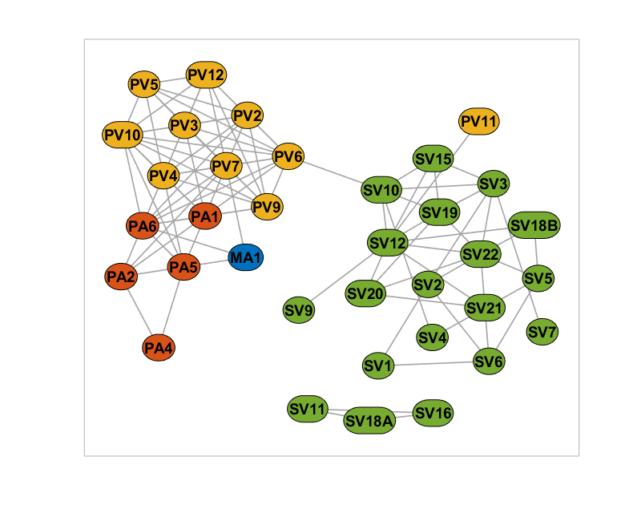
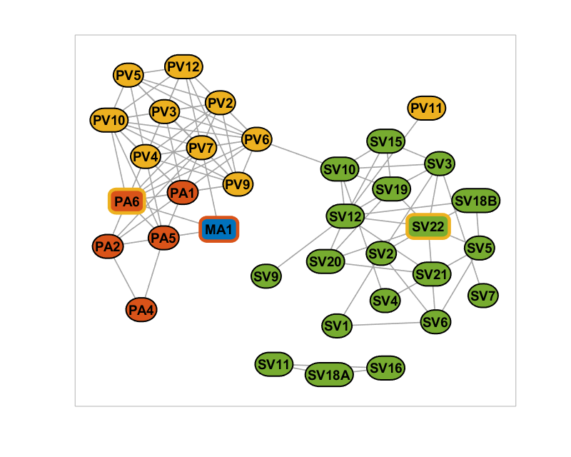
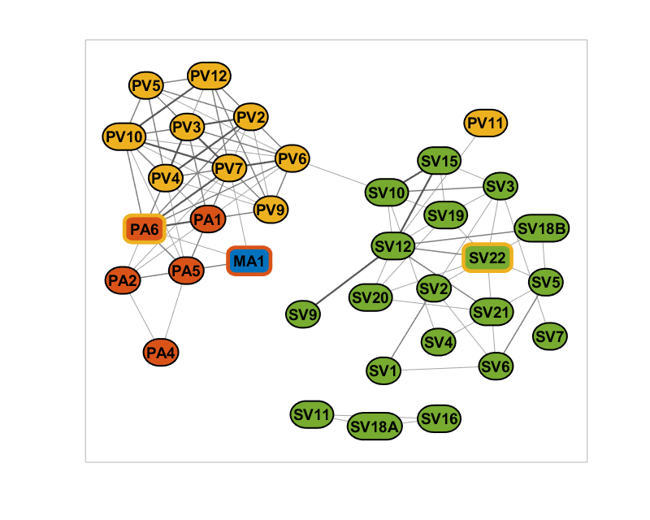

Demo (Questionnaire Association Network)
Contents
Load the sample dataset (Questionnaire Association Network)
In this example, we are given a set of questionnaire items and the associations (correlation coefficients) between them. Each item also belongs to a particular category. Some items are marked marked with a secondary cross category as well. Overall, this dataset contains two variables.
NodeList, a table with 4 fields:
- Name: Label of the item
- Category: Category of the item
- IsCrossCategory: true/false indicates if item has additional category
- CrossCategory: Additional category if IsCrossCategory = true
EdgeList, a table with 2 fields:
- Node1: Name of first item u of an edge (u, v)
- Node2: Name of second item v of an edge (u, v)
- Corr: Correlation coefficient between u and v
Our goal will be to create a network figure between the items Node colors indicating the item categories, and the node borders reflecting the secondary categories (if applicable). Whereas, the color and line widths of the edges will reflect the strength of the association between any two items.
load('data/sample_network_survey_association.mat'); disp(NodeList(1:5, :)) % Display the first 5 rows disp(EdgeList(1:5, :)) % Display the first 5 rows
Name Category IsCrossCategory CrossCategory
_______ ________ _______________ _____________
{'PA6'} {'PA'} true {'PV'}
{'PV2'} {'PV'} false {'PV'}
{'PV3'} {'PV'} false {'PV'}
{'PV4'} {'PV'} false {'PV'}
{'PV5'} {'PV'} false {'PV'}
Node1 Node2 Corr
_______ _______ _______
{'PA6'} {'PA6'} 1
{'PV2'} {'PA6'} 0.35987
{'PV3'} {'PA6'} 0.37956
{'PV4'} {'PA6'} 0.34733
{'PV5'} {'PA6'} 0.17661
Initial preparations
rng(1, 'twister'); % For reproducibility % Filter for edges with corr >= 0.2 EdgeList = EdgeList(EdgeList.Corr >= 0.2, :); % Map the edges and generate the network as a sparse matrix nNode = height(NodeList); [~, i1] = ismember(EdgeList.Node1, NodeList.Name); [~, i2] = ismember(EdgeList.Node2, NodeList.Name); W = sparse(i1, i2, EdgeList.Corr, nNode, nNode); W = (W + W')*0.5; % Make sure the matrix is symmetric % Initialize the networkvisualizer net = networkvisualizer(W);
Customize the colors based on categories and add labels
% Add node categories and color accordingly categories = unique(NodeList.Category); categoryColors = [0 0.447 0.741; 0.85 0.325 0.098; ... 0.929 0.694 0.125; 0.466 0.674 0.188]; net.addNodeClass(NodeList.Category, 'Category'); net.setNodeColors(categoryColors, categories, 'Category'); % Add labels and make sure the node sizes accomodate it net.setNodeLabels(nodeLabels); net.setNodeSizes('auto'); net.setNodeFontSize(14); % Prepare the figure and plot the initial version figure(1); clf(); set(gcf, 'Position', [0 0 800 640]); set(gcf, 'Color', [1 1 1]); plot(net);
Marking the cross category items
% Add the CrossCategory and IsCrossCategory as additional classes net.addNodeClass(NodeList.IsCrossCategory, 'IsCrossCategory'); net.addNodeClass(NodeList.CrossCategory, 'CrossCategory'); % Set the line colors of node borders based on their cross category net.setNodeLineColor(categoryColors, categories, 'CrossCategory'); % Set the line colors to black if the node does not have a cross category net.setNodeLineColor([0 0 0], false, 'IsCrossCategory'); % Set the border line width depending on if the node has cross category net.setNodeLineWidth([1.5; 3.5], [false; true], 'IsCrossCategory'); % Also, make the node more rectangular if it is cross category net.setNodeCurvature(0.5, true, 'IsCrossCategory'); % Plot the figure again figure(1); plot(net);
Setting the edge color and line widths based on weights
% Set edge categories based on weights % 1 for [0.2-0.3], 2 for [0.3-0.4], 3 for [>0.4] weights = W(net.Edges); weight_category = (weights >= 0.2) + (weights >= 0.3) + (weights >= 0.4); net.addEdgeClass(weight_category, 'weight_category'); % Set the edge line width based on the weight categories net.setEdgeLineWidth(0.75^2*[1; 2; 3], [1; 2; 3], 'weight_category'); % Set edge colors based on the category edge_cat_colors = [0.65 0.65 0.65; 0.5 0.5 0.5; 0.35 0.35 0.35]; net.setEdgeColors(edge_cat_colors, [1; 2; 3], 'weight_category'); % Plot the figure again figure(1); plot(net);